¿Qué categorías presentan diferencias detectables?
Cada renglón contrasta categoría A menos categoría B. Se informa el tamaño de la diferencia, su IC 95% individual y el valor p ajustado con Holm. “Diferencia detectada” significa p de Holm < 0.05. “Evidencia insuficiente” no demuestra igualdad. La magnitud y el intervalo permiten valorar la importancia práctica.
Se comparan los seis pares de los cuatro grupos principales (18–29, 30–44, 45–59 y 60+) dentro de cada indicador y año, y todos los años disponibles a una misma edad. Los grupos corresponden a jefatura del hogar en ENIGH y a personas adultas en ENSAFI. H1c y D2 conservan sus definiciones distintas.
Método, familias y límites
Medias y razones: linealización de Taylor por estratos y UPM, con todas las UPM de la muestra, incluso las que no aportan observaciones al dominio. Las diferencias dentro de una encuesta retienen la covarianza. Medianas, Gini, participaciones superiores y Lorenz: réplicas Rao–Wu de UPM (cantidad registrada en los CSV de precisión), con ponderadores publicados y sin recalibración. Aproximación con reemplazo, sin corrección por población finita. IC t; grados de libertad UPM menos estratos, limitados a B−1 para réplicas.
Holm controla el error familiar entre todos los pares de edad de un indicador/año; H2 incluye los pares de los diez deciles en esa familia. Los pares de años forman otra familia por indicador/edad; quintiles/deciles se incluyen conjuntamente. Las pruebas de gasto según flujos se ajustan entre edades dentro de cada año. La columna Familia muestra el alcance exacto. Los IC son individuales, no intervalos simultáneos.
Las comparaciones entre olas suponen independencia. Los cortes de ingreso y los pesos de estandarización por edad se tratan como fijos. No se incorpora incertidumbre por cambios de cuestionario, clasificación, calibración, no respuesta o subreporte. Estas pruebas describen diferencias; no identifican efectos causales, equivalencia ni diferencias puras de cohorte.
README · CSV original · CSV edades históricas · CSV años
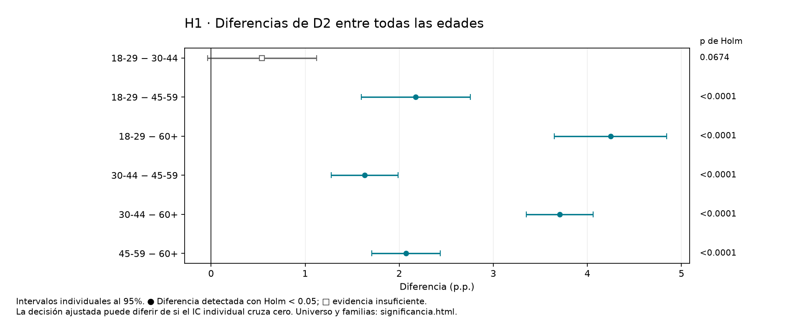
H1 · Diferencias de D2 entre todas las edades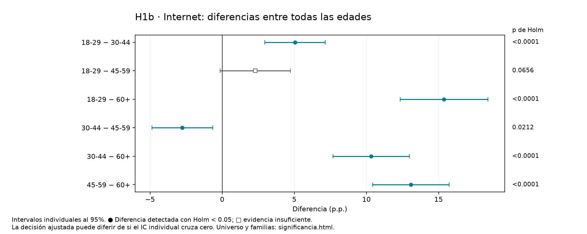
H1b · Internet: diferencias entre todas las edades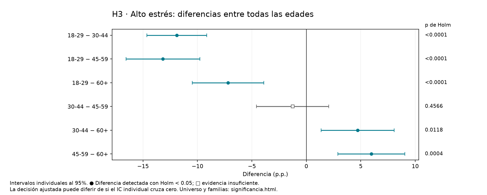
H3 · Alto estrés: diferencias entre todas las edades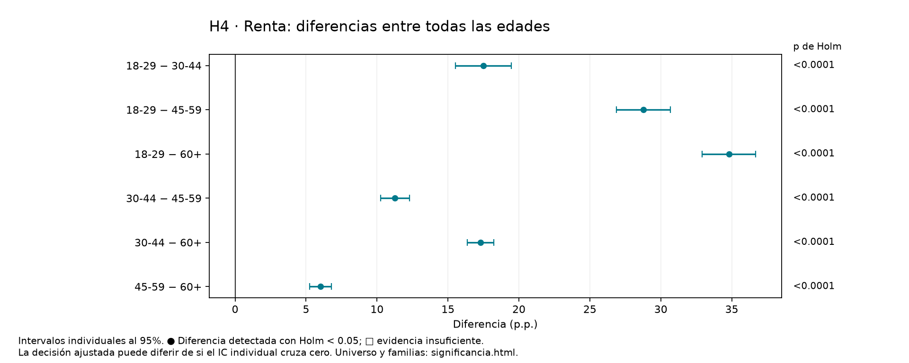
H4 · Renta: diferencias entre todas las edades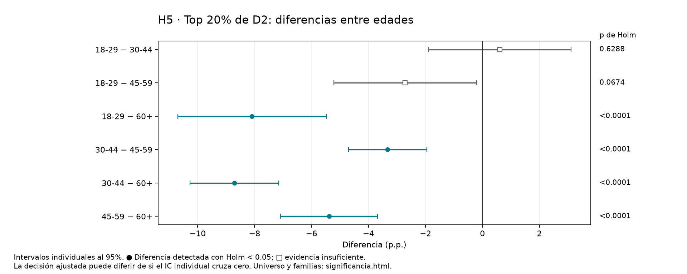
H5 · Top 20% de D2: diferencias entre edades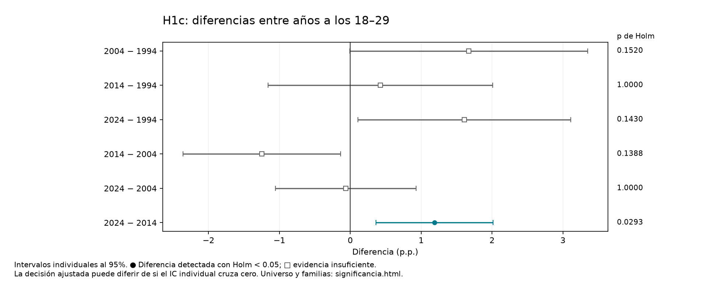
H1c: diferencias entre años a los 18–29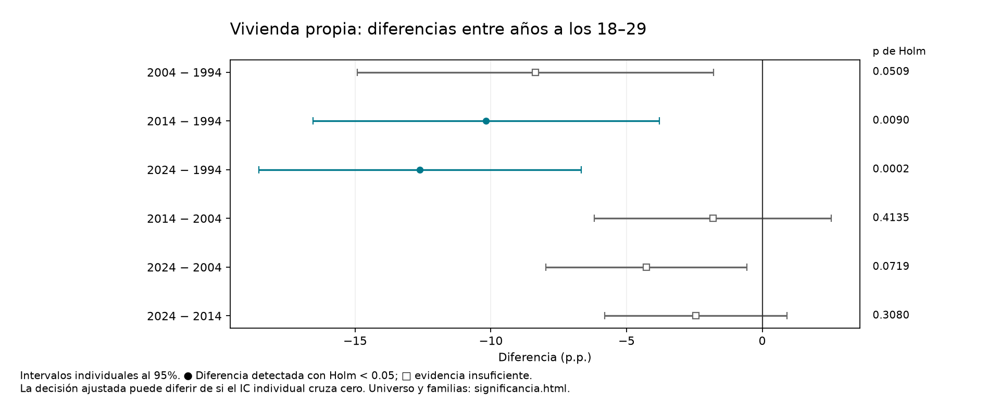
Vivienda propia: diferencias entre años a los 18–29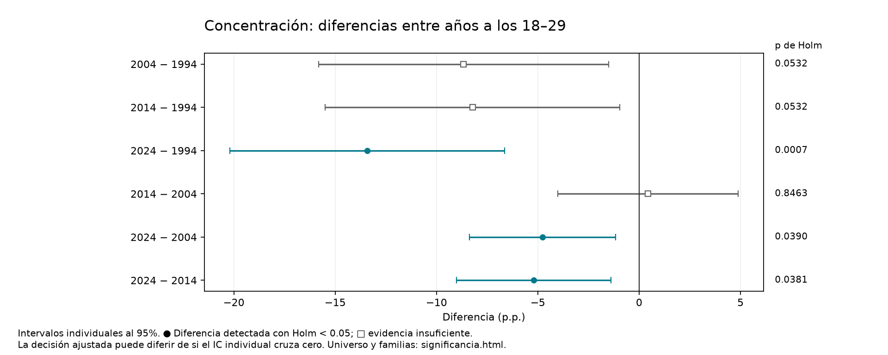
Concentración: diferencias entre años a los 18–29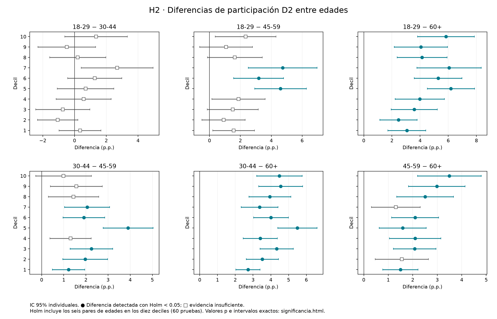
H2 · Diferencias de participación D2 entre edades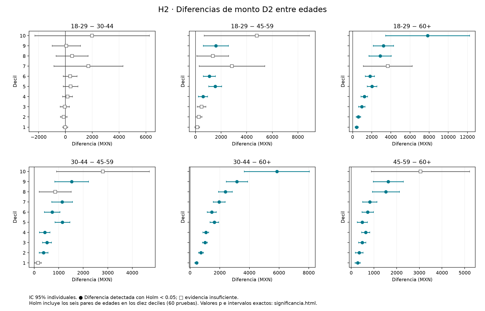
H2 · Diferencias de monto D2 entre edades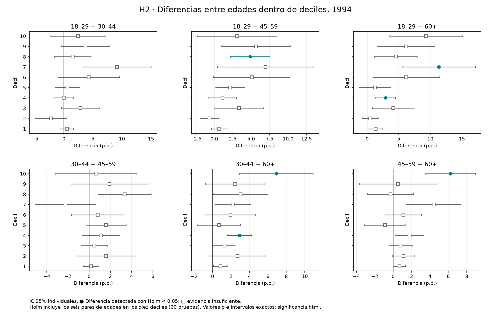
H2 · Diferencias entre edades dentro de deciles, 1994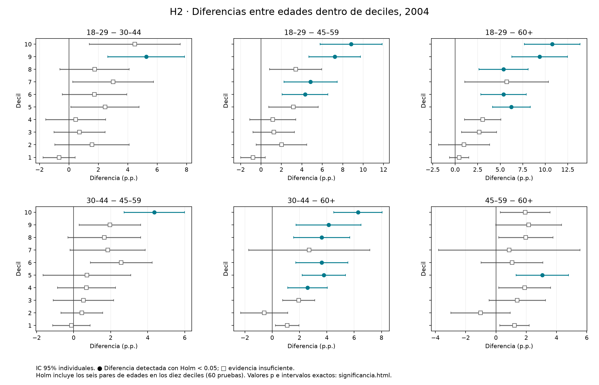
H2 · Diferencias entre edades dentro de deciles, 2004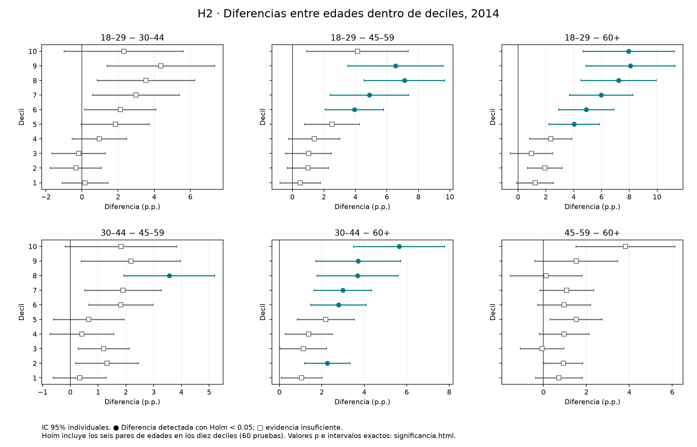
H2 · Diferencias entre edades dentro de deciles, 2014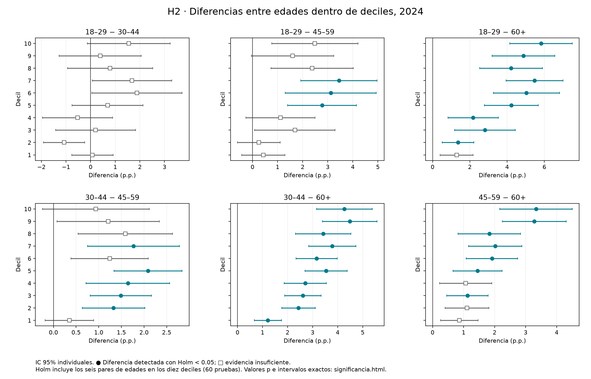
H2 · Diferencias entre edades dentro de deciles, 2024